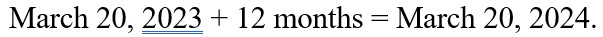

How to Calculate an Estimated Due Date (EDD)
By Michele Nizza
Step 1: Obtain the first day of the pregnant person's last menstrual period (LMP)
Let's use June 13, 2023.
Images from my typing out directions in Microsoft Word.
Step 2: Add seven days to the first day of the LMP.
Adding seven days to June 13, 2023, is June 20, 2023.

Images from my typing out directions in Microsoft Word.
Step 3: Subtract three months from the new date.
Subtracting three months from the new date makes it March 20, 2023.

Images from my typing out directions in Microsoft Word.
Step 4: Add twelve months to March 20, 2023.
Adding twleve months to March 20, 2023 makes it March 20, 2024. This is the pregnant person's estimated due date.

Images from my typing out directions in Microsoft Word.
In summary, here are all the steps to calculate an estimated due date:
- Obtain pregnant person's first date of their last menstrual period (LMP)
- Add seven days to the first day of the LMP.
- Subtract three months from the new date.
- Add twelve months to that new date.
Nowadays, providers do not hand calculate EDDs, as our electronic health record systems (EHRs) do the calculation for us. Here is a website that you can use to calculate an EDD just by putting in a date based on the options provided: Due Date Calculator.